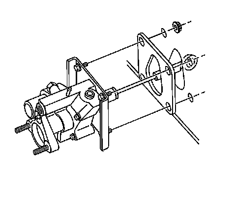

Hydraulic Brake Booster: Service and Repair
Power Brake Booster Replacement
Caution: Refer to Brake Fluid Irritant Caution.
Notice: Refer to Brake Fluid Effects on Paint and Electrical Components Notice.
Notice: Hydraulic brake systems use two distinct and incompatible fluids. Power steering fluid is used in the hydraulic brake booster system. Brake fluid is used in the master cylinder and brake pipes. Use extreme care when selecting brake system fluids, or seal damage can result. Refer to General Information to select the correct fluid.
Checking and Adding Fluid
For information on checking and adding fluid to the hydraulic booster system, refer to Checking and Adding Power Steering Fluid.
Bleeding the Hydraulic Booster System
Refer to Power Steering System Bleeding.
Flushing the Hydraulic Booster System
Refer to Power Steering System Flushing.
Removal Procedure
1. Apply the park brake and block the wheels.
2. Disconnect the inlet hose, the steering gear, and the return hoses from the booster assembly.
Important: DO NOT remove the pipes from the master cylinder.
3. Remove the master cylinder to hydraulic booster nuts and set the master cylinder aside in the engine compartment.
4. Remove the stop lamp switch.

5. Remove the 4 booster to bulkhead nuts.
6. Remove the booster assembly.
7. Remove the gasket.
Installation Procedure
1. Install the gasket.
2. Install the booster assembly.
Notice: Refer to Fastener Notice.
3. Install the 4 booster to bulkhead nuts.
Tighten the nuts to 33 N.m (24 lb ft).
4. Install the stop lamp switch.
5. Install the master cylinder to the brake booster.
Tighten the nuts to 33 N.m (24 lb ft).
6. Connect the return hose, the steering gear, and the inlet hoses.
7. Bleed the hydraulic booster system. Refer to Power Steering System Bleeding.
8. Release the park brake and unblock the wheels.